السلسلة 66
السيارة (صنف B) · 40 سؤال بالصوت. حاول تجاوب بوحدك، من بعد شوف الجواب.
السؤال 1
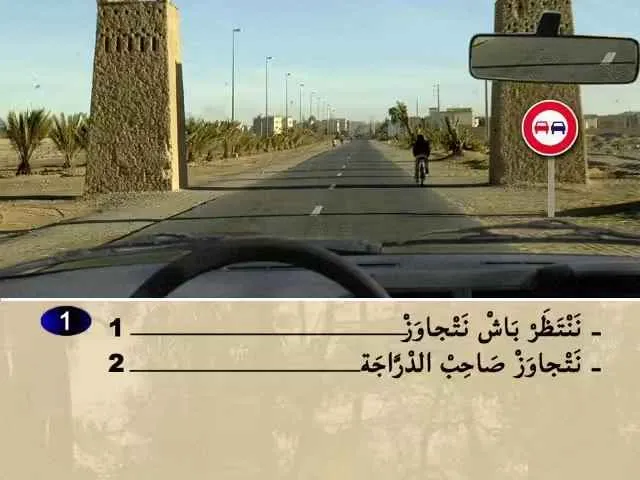
بيّن الجواب
الجواب الصحيح: 2
العلامة الطّرقية تمنعني من تجاوز السيارات اللي عندهم 4 عجلات، فهاد الحالة نقدر نتجاوز الدراجة حيث الخط متقطّع والمنع ما كيشملش الدراجة.
السؤال 2
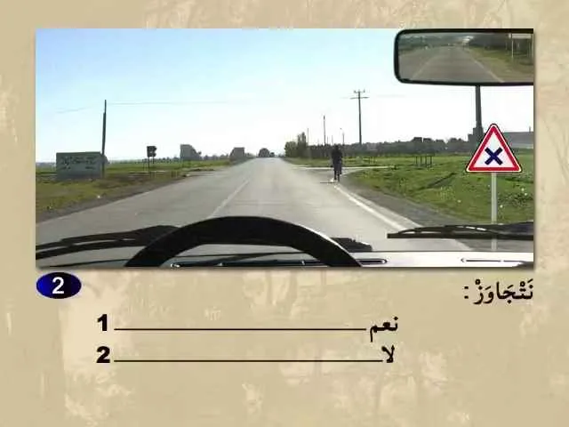
بيّن الجواب
الجواب الصحيح: 2
ما يمكنش نتجاوز دابا، الإشارة الطرقية كتعلمنا بوجود ملتقى الطرق وفملتقيات الطرق التجاوز ممنوع، كاين الخط المتّصل اللي كيمنع التجاوز أيضا.
السؤال 3
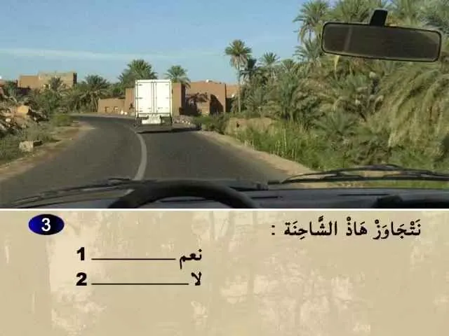
بيّن الجواب
الجواب الصحيح: 2
ما يمكنش نتجاوز الشاحنة دابا، حيت حنا فمُنعرج، وكاين خط متصل كيمنعنا من التجاوز كذلك.
السؤال 4
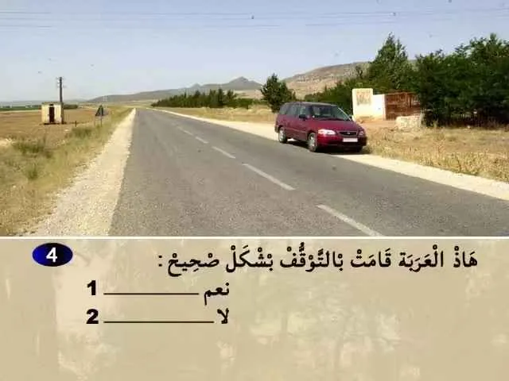
بيّن الجواب
الجواب الصحيح: 2
هاد السيارة ما وقفاتش بطريقة صحيحة، حيث الوقوف الصحيح خاص يكونو جميع العجلات خارج الطريق الرئيسية، وفهاد الصورة العجلات باقين فطريق، يعني الوقوف غير صحيح.
السؤال 5
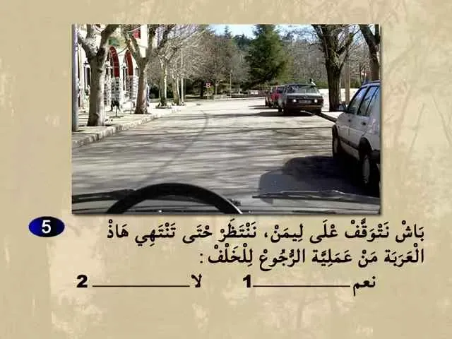
بيّن الجواب
الجواب الصحيح: 1
باش نوقف على الجهة اليمنى، خاصني ننتظر حتى السيارة اللي قدامي تكمل الرجوع للخلف وبعدها يمكنني نوقف على الجهة اليمنى.
السؤال 6
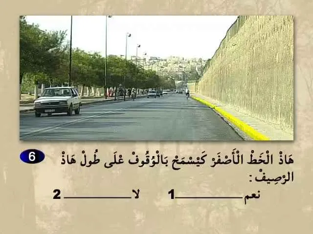
بيّن الجواب
الجواب الصحيح: 2
هاد الخط الأصفر المتّصل كيمنع الوقوف والتّوقّف على طول الرصيف.
السؤال 7
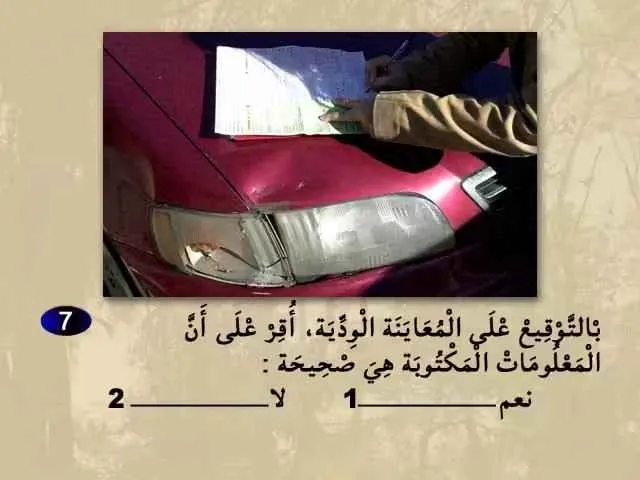
بيّن الجواب
الجواب الصحيح: 1
من بعد التوقيع على المعاينة الودّية يعني أنني موافق على أن جميع المعلومات اللي أمضيت عليها.
السؤال 8
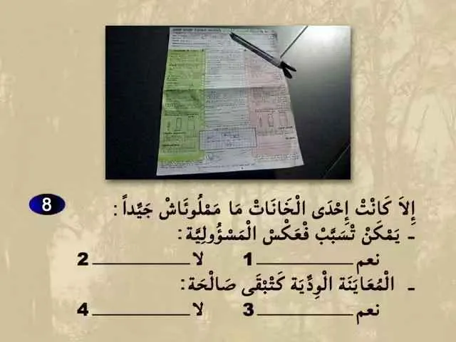
بيّن الجواب
الجواب الصحيح: 1 و 3
قبل التوقيع على المعاينة الودّية خاصني نتأكد أنني عَمَرت جميع الخانات بشكل صحيح، حيث أي خطأ يمكن يسبب في عكس المسؤولية.
السؤال 9
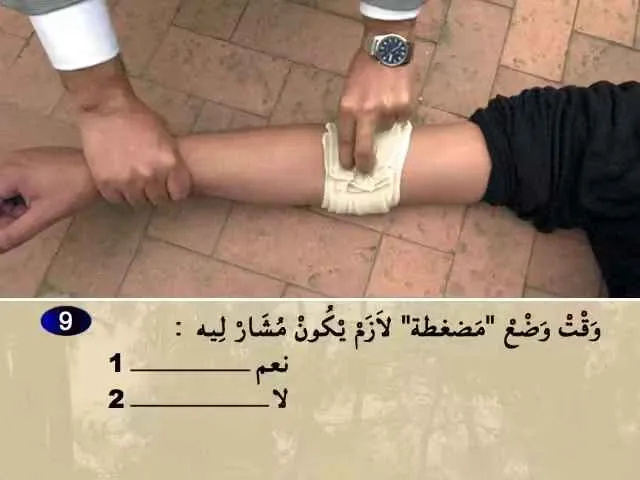
بيّن الجواب
الجواب الصحيح: 1
فحالة وضع شخص ضمادة لمصاب خاص اللي حط الضمادة يكتب الوقت اللي حطها فيه.
السؤال 10
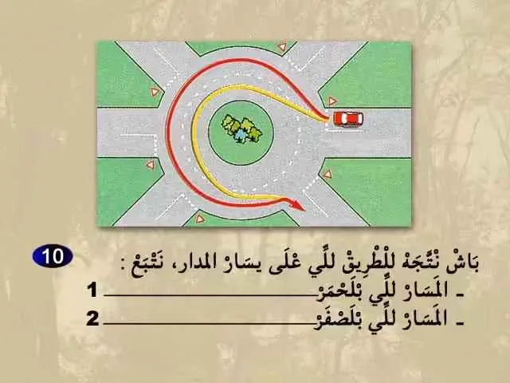
بيّن الجواب
الجواب الصحيح: 2
اذا بغيت ندور فالمدار خاصني نتبع المسار الأصفر. (المسار الأحمر نتبعو لو بغيت ندور على اليمين أو نستمر مباشرة)
السؤال 11
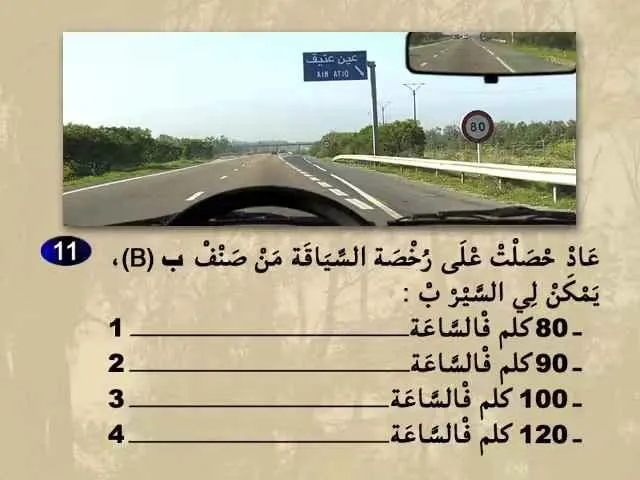
بيّن الجواب
الجواب الصحيح: 1 و 2
عاد حصلت على رخصة السياقة من صنف ب (B) (يعني أنني فالفترة التجريبية اللي كتستمر لعامين) فالسرعة القصوى اللي نقدر نسير بها هي 90 كلم او أقل، بالنسبة للعلامة الطرقية الخاصة بتحديد السرعة في 80 كلم في الساعة فهي خاصة بالعربات اللي غادي تبدل المسلك إلى مسلك التباطؤ وما كتهمنيش.
السؤال 12
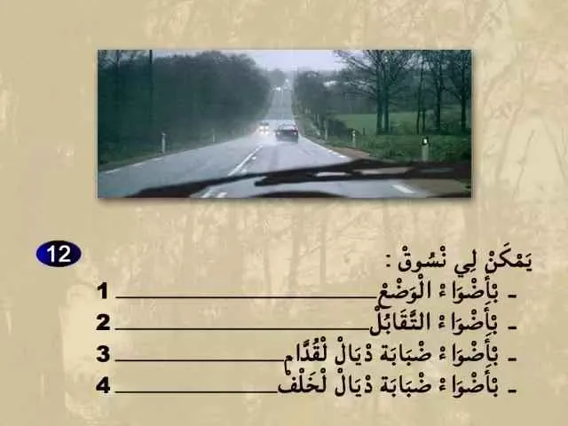
بيّن الجواب
الجواب الصحيح: 2 و 3
عند هطول الأمطار، نقدر نستعمل أضواء التّقابل وأضواء الضبابة الأمامية للسير. (بالنسبة لأضواء الضبابة الخلفية، نستعملها عند وجود الثلج أو الضبابة فالطريق).
السؤال 13
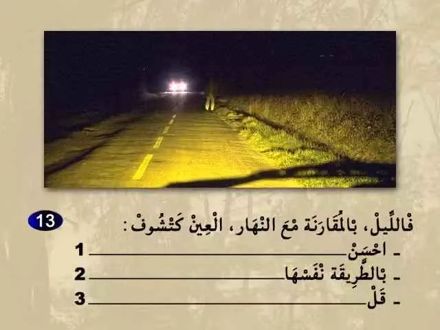
بيّن الجواب
الجواب الصحيح: 3
فالفترة الليلية الرؤية صعيبة شي شوية مقارنة مع الفترة الصباحية اللي الرؤية فيها واضحة أثناء السير. إذن العين كتشوف أقل فليل.
السؤال 14
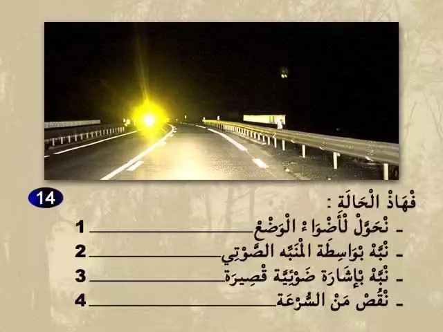
بيّن الجواب
الجواب الصحيح: 3 و 4
فالفترة الليلية وعند التقابل مع سيارة ما نستعملوش أضواء الوضع حيت ما كنستعملوهومش خارج المدينة، وما نستعملوش المنبّه الصوتي حيت ممنوع إلا فحالات الخطر. ونقدر نعمل إشعار ضوئي قصير باش السيارة اللي فالجهة المعاكسة تبدل أضواء الطريق اللي كتستعمل وأيضا نبهها بوجودي، وبطبيعة الحال نخفف السرعة.
السؤال 15
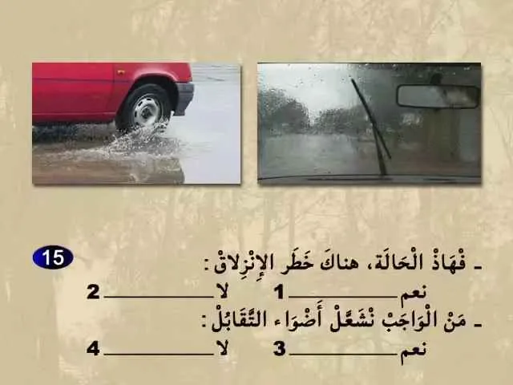
بيّن الجواب
الجواب الصحيح: 1 و 3
كاين تساقطات مطرية والأرض مبللة إذن كاين خطر الانزلاق. وعند القيادة فالأمطار خاصنا نستعملو أضواء التّقابل وأضواء الضباب الأمامية.
السؤال 16
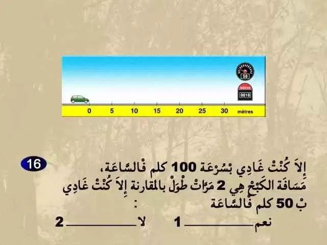
بيّن الجواب
الجواب الصحيح: 2
مسافة الكبح هي المسافة بين الضغط على الفرامل ووقوف السيارة. مسافة الكبح إذا كنت أسير بسرعة 100 كلم في الساعة ماشي بالضرورة أطول بمرتين لو كنت أسير بسرعة 50 كلم في الساعة.
السؤال 17
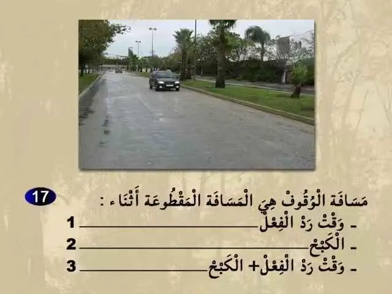
بيّن الجواب
الجواب الصحيح: 3
مسافة الوقوف هي مسافة وقت رد الفعل + مسافة الفرملة.
السؤال 18
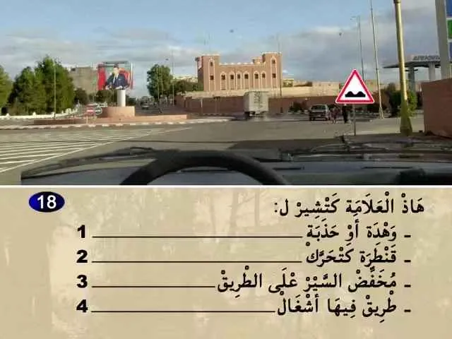
بيّن الجواب
الجواب الصحيح: 1
العلامة الطرقية كتعني وجود وَهْدَة أو حَذَبَة على بعد 50 متر (لأن العلامة تتواجد داخل المدينة).
السؤال 19
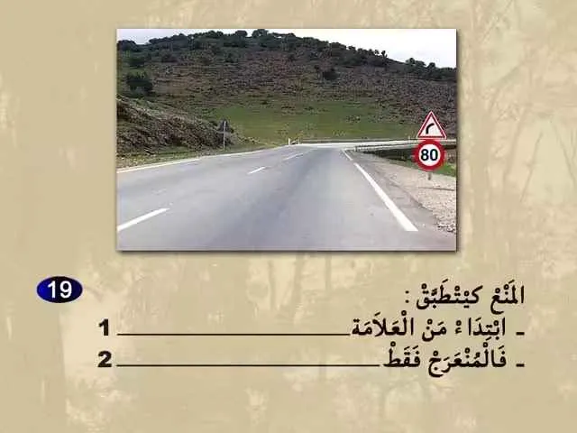
بيّن الجواب
الجواب الصحيح: 1
علامة المنع كتطبق دائما من عند العلامة الطرقية. (يعني المنع من تجاوز سرعة 80 كلم في الساعة كيبدا من عند العلامة الطرقية ماشي فالمنعرج فقط).
السؤال 20
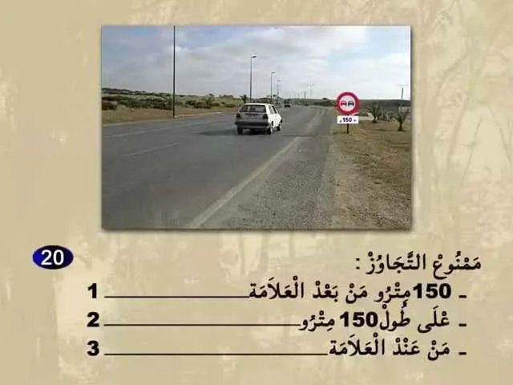
بيّن الجواب
الجواب الصحيح: 1
بالنسبة لعلامة منع التجاوز، كتطبق من عند العلامة، ولكن كاينة علامة تكميلية أسفلها (150 متر) وهي كتوضح أن المنع من التجاوز غيبدا من بعد 150 متر ماشي دابا.
السؤال 21
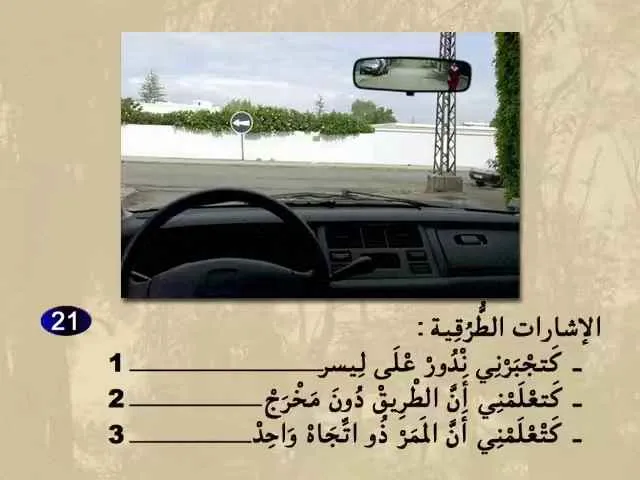
بيّن الجواب
الجواب الصحيح: 1
الإشارة الطرقية كتعني الإجبار، وفهاد الحالة، كتلزمني ندور لليسار.
السؤال 22
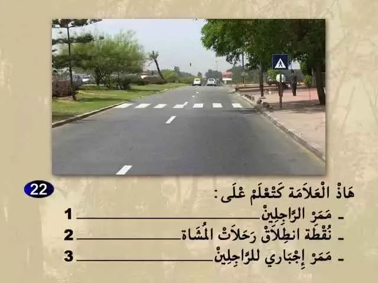
بيّن الجواب
الجواب الصحيح: 1
العلامة الطرقية كتعني أن هاد ممر خاص بالراجلين.
السؤال 23
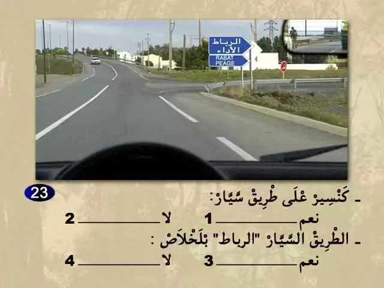
بيّن الجواب
الجواب الصحيح: 2 و 3
أنا دابا ماشي فطريق السيار، العلامة الطرقية كتعني أنني غادي نستعمل الطريق السيار لو بدلت الاتجاه لليمين. بالنسبة للطريق السيار فهو مدفوع ماشي مجاني.
السؤال 24
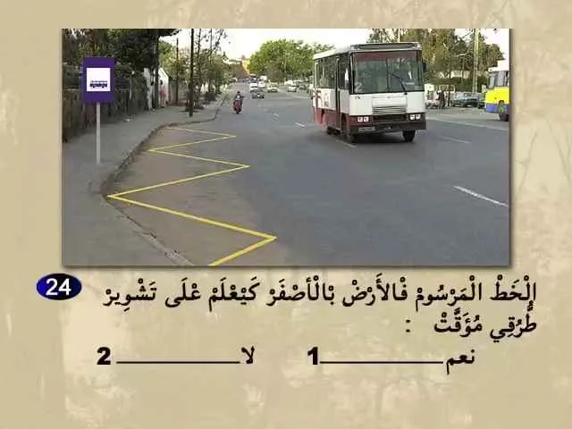
بيّن الجواب
الجواب الصحيح: 2
العلامة الطرقية الموجودة على اليسار كتعني أن هاد المكان خاص بالحافلات. بالنسبة للخط الأصفر المرسوم على الأرض فهو دائم وكيشير أن هاد المكان خاص بالحافلات (ما يمكنش الوقوف والتوقّف فهاد المكان).
السؤال 25
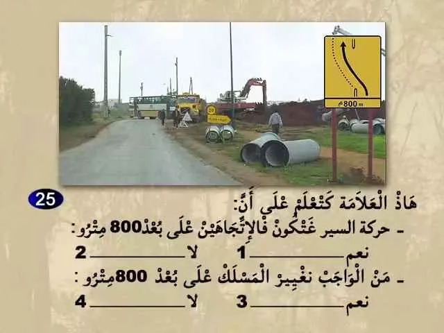
بيّن الجواب
الجواب الصحيح: 2 و 3
هاد العلامة الطرقية ما كتعنيش أن حركة السير غادي تكون فالاتجاهين على بعد 800 متر. كيفما أنه على بعد 800 متر (أي بعد انتهاء مسافة 800 متر اللي كتشير لها العلامة الطرقية) خاصنا نبدلو المسلك.
السؤال 26
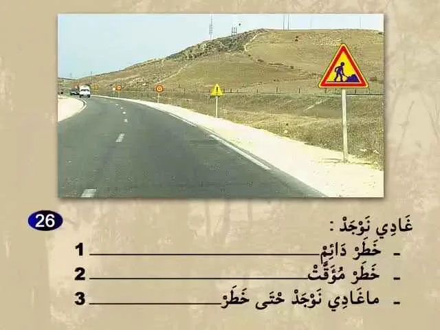
بيّن الجواب
الجواب الصحيح: 2
العلامات الطرقية كتوضح الأشغال، والخطر اللي كاين خطر مؤقت حيت العلامات صفراء مؤقتة.
السؤال 27
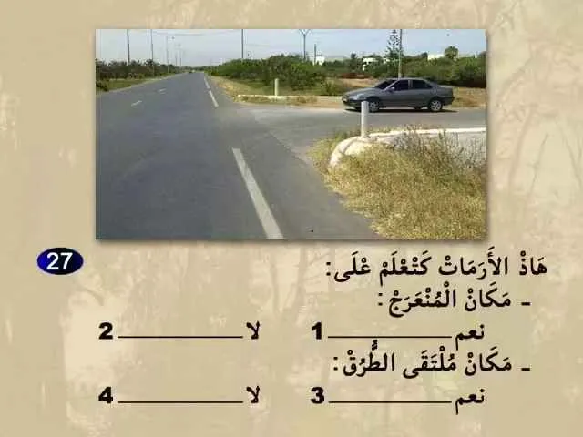
بيّن الجواب
الجواب الصحيح: 2 و 3
مني نلقاو الأرمات كلها باللون الأبيض فهي كتشير لملتقى الطرق. (مني يكون لون أحمر فالأعلى ديال الأرمات فهي كتوضح منعرج).
السؤال 28
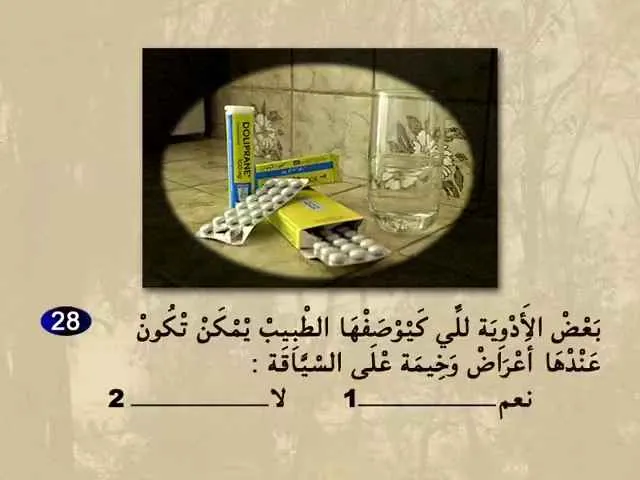
بيّن الجواب
الجواب الصحيح: 1
نعم كاين بعض الأدوية اللي كيديروا أعراض وخيمة للسائق وكيسببوا فالنوم أثناء القيادة وعدم التّركيز.
السؤال 29
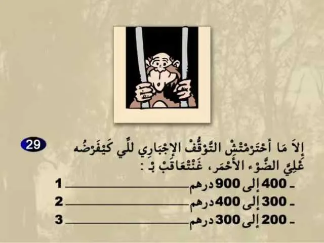
بيّن الجواب
الجواب الصحيح: 2
إذا ما احترمتش الوقوف الإجباري اللي كتحتمه الإشارة الضوئية الحمراء فالغرامة المالية كتكون بين 400 درهم و900 درهم.
السؤال 30
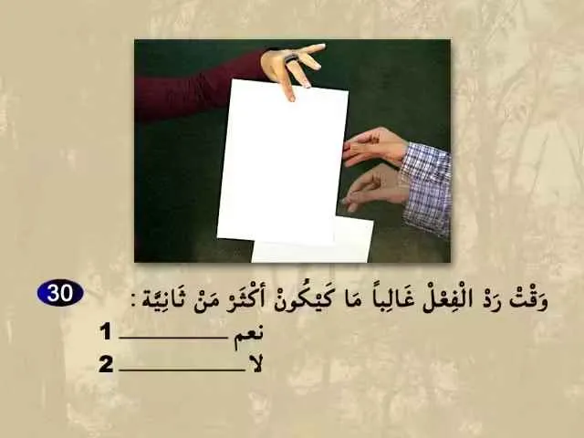
بيّن الجواب
الجواب الصحيح: 1
نعم، بالنسبة لوقت رد الفعل غالبا كيكون أكثر من ثانية.
السؤال 31
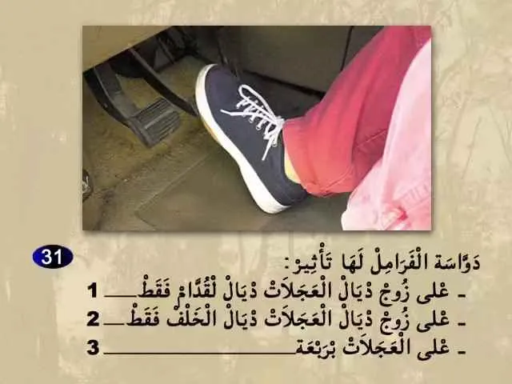
بيّن الجواب
الجواب الصحيح: 3
دواسة الفرامل كتحكم فجميع عجلات السيارة الأربعة.
السؤال 32
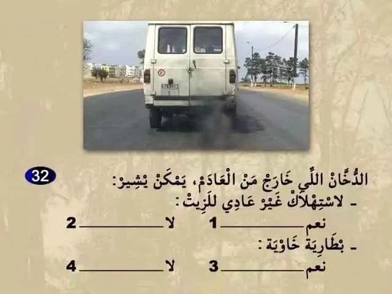
بيّن الجواب
الجواب الصحيح: 1 و 4
الدخان اللي كخرج من العادم كيشير أن كاين استهلاك غير عادي للزيت، وما كيشيرش أن البطارية فارغة.
السؤال 33
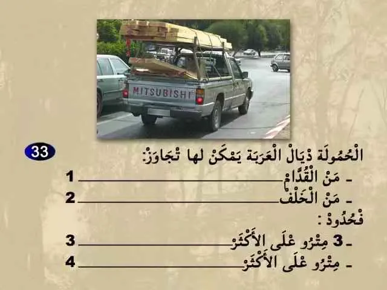
بيّن الجواب
الجواب الصحيح: 2 و 3
الحمولة اللي نقدر نحط فوق السيارة يمكن تتجاوز السيارة من الخلف فقط، والحمولة يمكن تتجاوز مسافة 3 أمتار من الخلف كحد أقصى.
السؤال 34
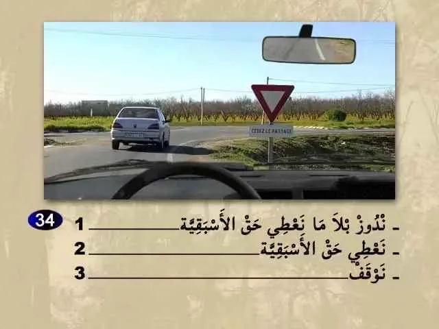
بيّن الجواب
الجواب الصحيح: 2
العلامة الطرقية كتعني أنه ما عندناش حق الأسبقية، إذن غادي نعطي حق الأسبقية للسيارات الأخرى.
السؤال 35
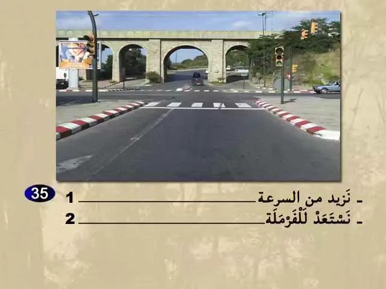
بيّن الجواب
الجواب الصحيح: 2
ما نزيدوش السرعة فملتقيات الطرق، وبما أننا قراب من ملتقى الطرق وعلى الرغم من أن الإشارة الضوئية خضراء خاصنا نستعد للفرملة تحسبا لأي خطر.
السؤال 36
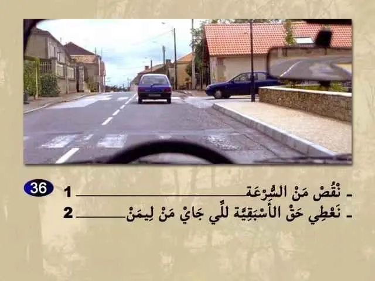
بيّن الجواب
الجواب الصحيح: 1 و 2
بما أن الأسبقية للسيارات القادمة من الجهة اليمنى إذن خاصني ننقص من السرعة ونعطي للعربة القادمة من اليمين حق الأسبقية.
السؤال 37
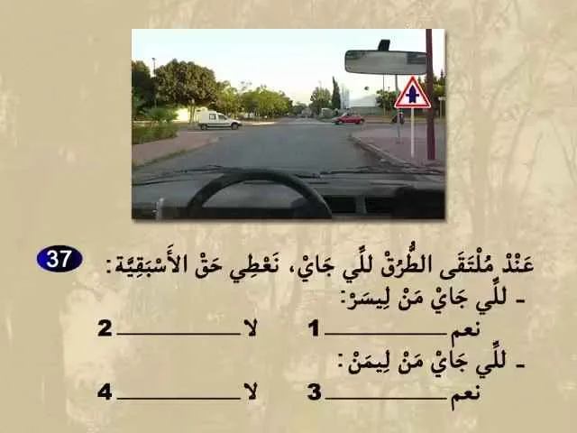
بيّن الجواب
الجواب الصحيح: 2 و 4
العلامة الطرقية كتعني انتباه خطر طريق ذات أولوية المرور (طريق كبيرة فصغيرة) خاص ننقص من السرعة ونمرو لأن الأسبقية لنا.
السؤال 38
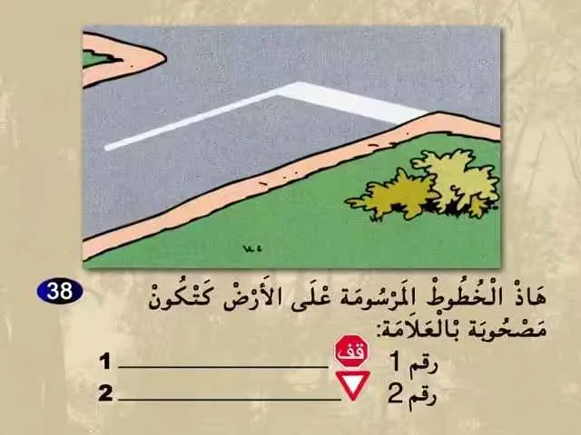
بيّن الجواب
الجواب الصحيح: 1
بالنسبة للخط المرسوم على الأرض فهو كيعني ان الوقوف المفروض بعلامة قف خاص يكون عند داك الخط.
السؤال 39
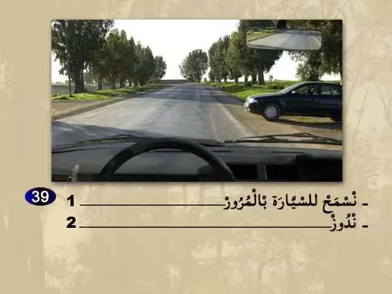
بيّن الجواب
الجواب الصحيح: 2
السيارة كتواجد فطريق غير مُعَبَّدة فهاد الحالة الأسبقية لنا على الرغم من أنها كتواجد فالجهة اليمنى خاصها توقف وتنتظر للمرور.
السؤال 40
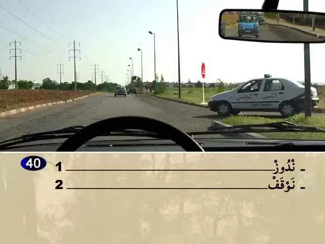
بيّن الجواب
الجواب الصحيح: 2
على الرغم من أن سيارة الشرطة عندها علامة قف خاصنا نوقفو ونسمحو لها بالمرور حيت فمهمة كما كتوضح الأضواء الحمراء فوق سيارة الشرطة.